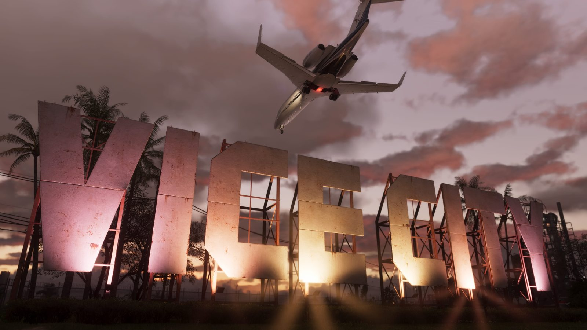
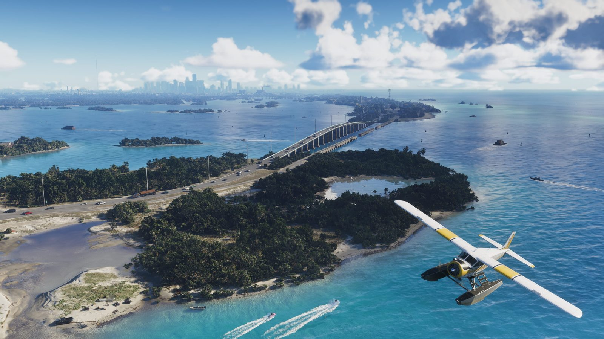
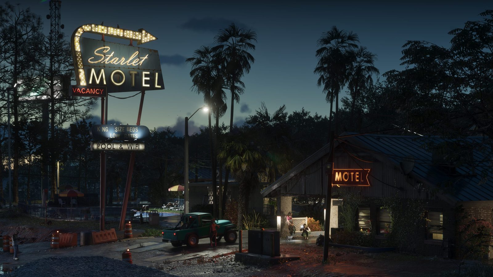

Confirmed
Vice City, USA
The major urban stage and the centre of the site's map coverage.
Vice City • Leonida • Jason & Lucia
A clean fan-made GTA VI hub for map areas, mission planning, transport notes, gameplay tips, media and official updates. Confirmed details and speculation are clearly separated.
Content hub
The site is now split into focused pages. This is better for visitors, search engines, future walkthroughs and regular updates.
People and places

The major urban stage and the centre of the site's map coverage.


Source rule
Confirmed means official material. Trailer-based means visible from official media. Speculation means a careful prediction and should be updated later.
Read rulesReady for launch
The site is ready for walkthroughs, area routes, transport locations, screenshots and update posts.